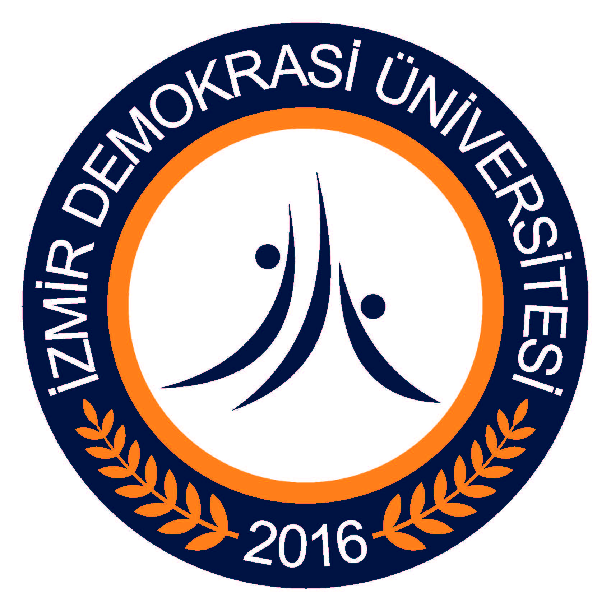

Hello, some people call me as "Arjen", some others "Ercan". You can call me as ElectricLeakage. I am a lifelong learner. Via this page you can get to know me more closely.
After graduating from high school, i entered national university exam in 2011 which has approximately 2 million participants. And then, i entered into first 1 % ( ≈12000). Afterwards, i started to study at Middle East Technical University NCC with full (100%) scholarship. After spending 5 years there, my scholarship is cut and i was dropped from university. However, i was determined to never give up. That’s why i entered university exam in 2020 once more. As a result, i attended Izmir Democracy University and graduated in 2024 from there.
In university i learned how i can accomodate easily to new things. I carried out many engineering projects. For instance, i performed various animation projects on 7-segment display with PIC Microcontroller and again i managed adjusting a servo motor’s velocity control with PIC Microcontroller.
Yet another, i conducted a machine learning project that is watch price prediction. In this project i used linear regression model. Before running my model i preprocessed the data. I cleaned my data from missing data’s, then i normalized my data. Afterwards, i ran my model, lastly i predict model and visualized my data.
In addition, in my graduation project i processed brain signals (EEG). In this project i removed artifacts from noised EEG signals. Which were came from network and eyes and muscles. I used a CNN model and prepared data. I inserted noisy EEG and raw EEG to the model and i took noise alone and clean EEG.
As i mentioned above one of my best personal characteristic is never give up upon a goal. Furthermore, another is working is my motivation. I work as long as i work.